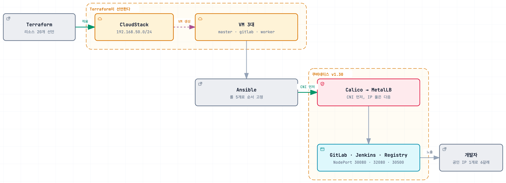

쿠버네티스 클러스터 인프라 구축
사설 클라우드에 쿠버네티스 클러스터 구축
Impact
- 6갈래공인 IP 하나를 SSH 3개·NodePort 3개로 갈라 노드와 서비스를 노출
- 5단계마스터 초기화 → CNI → 워커 합류 → LB → 앱 순으로 롤을 끊어 순서를 고정
Background
사설 CloudStack 위에 3노드 쿠버네티스 클러스터를 세우고 커밋이 배포까지 이어지는 파이프라인을 붙였습니다. 퍼블릭 클라우드가 아니라서 로드밸런서를 대신 만들어 주는 장치가 없고 공인 IP도 하나만 받는데, 이 두 가지가 제약의 대부분이었습니다.
Architecture

Contributions
공인 IP 하나, 포트로 분리
공인 IP가 하나라 포트 규약을 먼저 정했습니다. SSH는 22, 2201, 2202로 노드를 나누고 서비스는 쿠버네티스가 노드에 여는 NodePort 번호를 그대로 외부 포트로 통과시켰습니다. 규약을 나중에 정하면 서비스가 늘 때마다 포트가 충돌합니다.
몇 번을 돌려도 같은 상태
Terraform으로 노드를 만들고 Ansible로 설정합니다. 마스터 준비, Calico, 워커 조인, MetalLB, 앱 배포 순서인데 마스터가 준비된 뒤에야 워커가 조인할 수 있어서 플레이를 나눠 경계를 뒀습니다. 초기화와 조인은 이미 끝났으면 건너뜁니다. 조인 토큰은 파일 대신 메모리로 넘겼습니다.
외부 노출은 NodePort
type: LoadBalancer 서비스는 클라우드 제공자가 로드밸런서를 만들어 준다는 전제 위에 있는데 사설 CloudStack에는 그 장치가 없습니다. MetalLB를 설치해 IP 풀과 L2Advertisement까지 구성했지만 거기까지이고, 실제 외부 접근은 공인 IP 하나에 포트포워딩을 걸어 NodePort로 내려보냅니다. 노드가 3대이고 마스터가 1대라 마스터가 멈추면 클러스터도 멈춥니다.